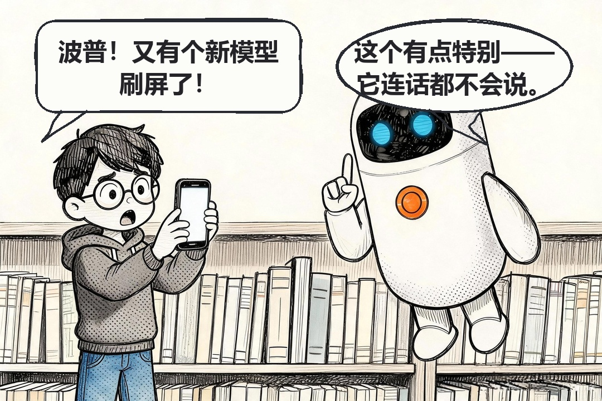
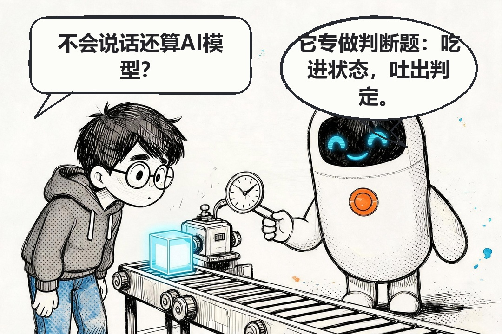
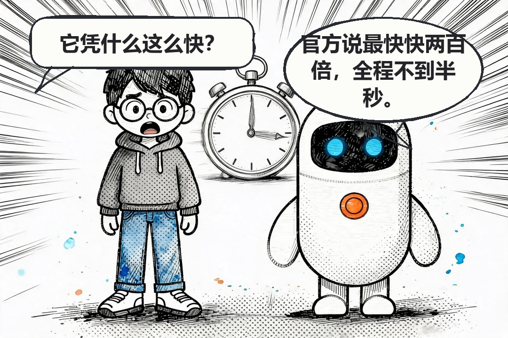
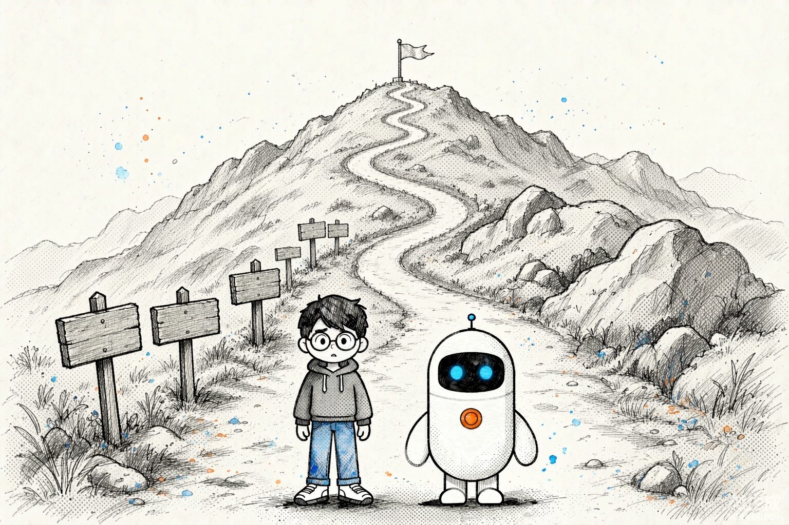
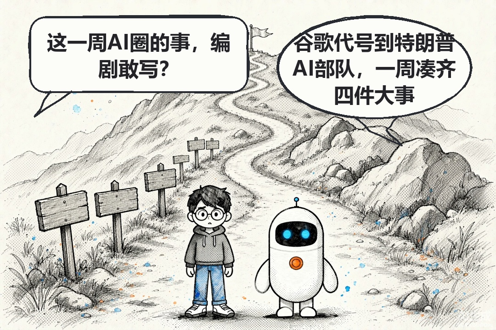
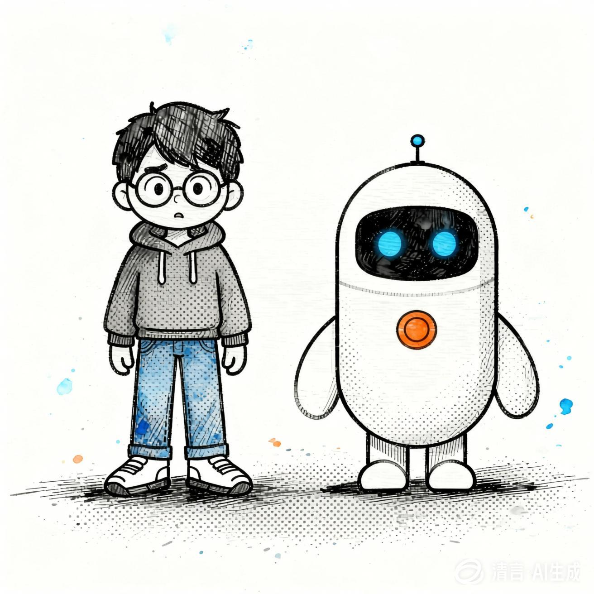
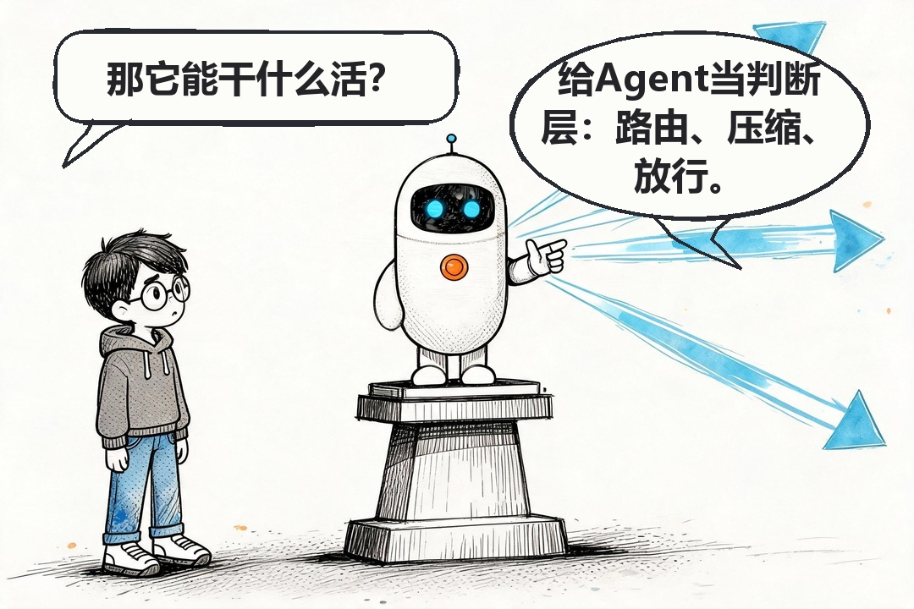
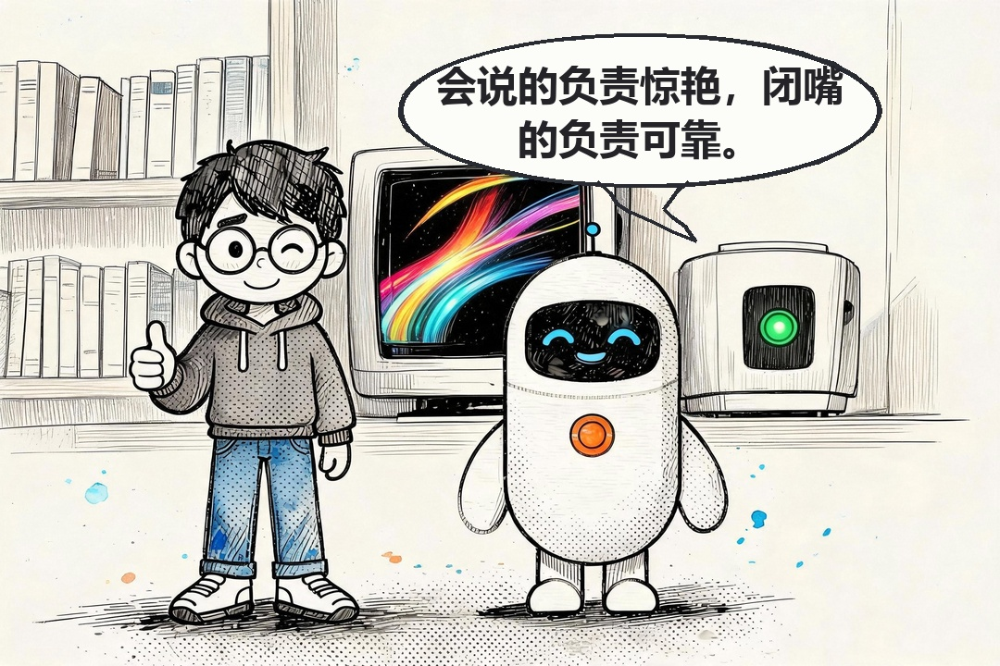
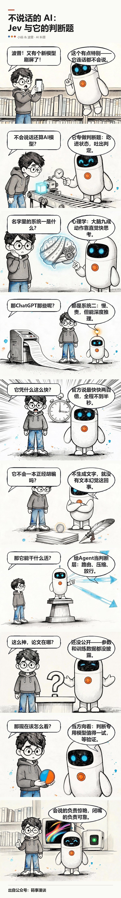

9 月 15 日，一家叫 TypeSafe AI 的公司发了个模型，名字叫 Jev。它不聊天，不写代码，也不写文章；你拿开放性问题问它，它一概不理。
可它火了。创办这家公司的是前 OpenAI 研究员 Diogo Almeida，他们还给 Jev 起了个新类别名：System One Model，译过来叫"系统一模型"。几天之内，讨论刷遍了开发者社区。
我想写它，卡在一个地方："系统一模型"这个概念，纯文字讲不利索。 传统大模型的输出是一段一段文字；Jev 的输出里没有文字——你给它一份状态数据加一组预定义问题，它直接吐出结构化判定和一个概率。这点差别，写下来得两三段，读者读完点头，脑子里还是没画面。
所以我决定把它画成漫画。可麻烦的是手头没有趁手的工具：现成的 AI 生图一画中文就错字，气泡歪歪扭扭。于是我用 WorkBuddy 做了一个，叫 comic-maker。
我让它干的，是把整条链路从零搭起来——写脚本、出图、绘气泡、拼装、出图文，全在 WorkBuddy 里跑。现在它每期能稳定产出一篇文字加漫画的技术文章，Jev 这期就是它做的。
拿 Jev 举例。
一格画面就能说清：传送带把状态块送进去，判定牌吐出来。


再比如"快多少"。官方口径是端到端响应 70 到 500 毫秒，同等智能水平下比 LLM 快 40 到 200 倍。数字好记，可"快"是什么感觉，数字给不了——一格秒表，读者秒懂。

分镜有个硬规矩：每句台词 ≤ 22 字，一问一答各一句。这条约束反过来逼我——讲不清的点，多数不是画不出来，是我自己没想明白。Jev 那期，我删掉的分镜比留下的多。
一句话：生成模型只画没有气泡、没有文字的空场景，气泡和台词全部由代码画。
早期我让模型连气泡一起画，结果是个盲盒：中文错字、文字溢出格子、字号忽大忽小、气泡正好盖在角色脸上。修一版，换一种错法。根子在于模型画的气泡没有几何保证——你是在跟一个采样过程要排版精度。
文字改用 Pillow 渲染之后，这几类问题从根上消失了：不会乱码；气泡和文字在同一个坐标系里，不会溢出；字号是全局档位，只会一致。


角色靠定妆照锁。小码（提问者，黑短发、圆框眼镜、深灰连帽衫）和波普（解答者，白色胶囊形小机器人）共用一张基准图，每次出图前喂回去。

这些规矩都是踩出来的，登记在 docs/ROOT-CAUSES.md，从 R1 到 R20。
跑通之后，我把它做成一个可复用的 Skill，挂在 ~/.workbuddy/skills/comic-maker。每期我只给一句话：拿这篇源文章，出一期漫画。它按八步跑完。
article_to_storyboard.py 出分镜草稿，没有就先写 draft.md。不改完文案不许开画。storyboard.md 五列：文件、提问、解答、画面。每句台词 ≤ 22 字，一问一答各一句。分镜要先给我看，我说 OK 才出图。parse_storyboard.py 产出 bubbles.json，这是全链路的单一事实源。v8-NN.raw.jpg，再出下一张。并行调用会共享输出目录、同名文件互相覆盖，最后一期只剩一张图。draw_bubbles.py 把所有源图重采样到 1080px 成品宽度，再按 SIZE_TIERS=[44,38,32,26] 逐档试排，第一档能塞进 0.55H 就用。说话人只靠气泡形状区分——小码是圆角矩形带左下尾，波普是椭圆带锯齿尾；不靠字重。stack.py 读 stack.json，加标题区、竖拼、加页脚，出 long-manga.jpg；gen_blog.py 再把分镜产成三版：Markdown 图文版、杂志风 HTML、公众号复制版。八步里最要紧的一处，是出图统一走 WorkBuddy 内置的 ImageGen（图生图传 image1）。不用另配出图后端，这套流程才能每期稳定跑下来。
TypeSafe 给 Jev 点了三个用法：Agent 路由、上下文压缩、操作放行。这格画的是它想站在 Agent 的马路中间。


成品是张 1080 宽的竖版长图，公众号直接就能用：

stories/ 下存着可直接复现的锁定分镜，articles/ 下有多篇源文章，都能拿来跑。
串行出图那条纪律别图快——我并行过一次，最后一期只剩一张图。
数据也得自己打折。Jev 那个"快 40 到 200 倍"是 TypeSafe 的官方口径，论文没公开，参数规模、网络结构、训练数据一概没披露，36 氪当时的标题直接问"Jev 真是新范式吗"。所以那期漫画里我写的是"当方向看，别当结论看"。漫画把概念讲清楚是强项，可一个没验证的数字画进画面，比写在段落里更容易被当成定论。
每期我仍然要验收。它把"每格都盯"变成"看几处"，省掉的是重复劳动，不是判断。
现在的状态是：一篇源文章进去，一张长图加三版图文出来，我只在分镜确认和终检两处插手。
代码全开源，仓库在这儿：https://github.com/aiyinluya/comic-maker
下一步想解决的是最后一公里：漫画现在能直接发文，那能不能直接做成视频？把一格一格推成镜头、配上节奏——这条链路还没做。